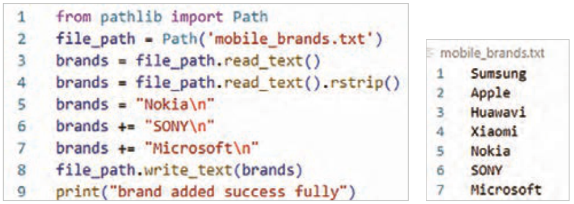
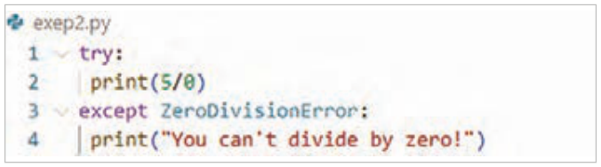
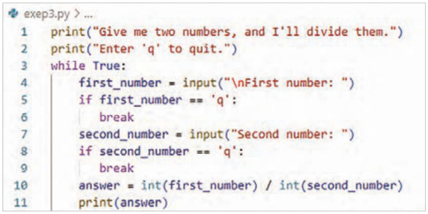
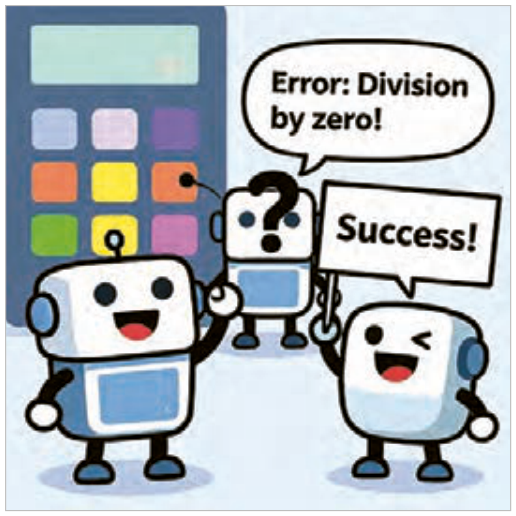
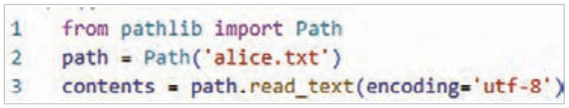
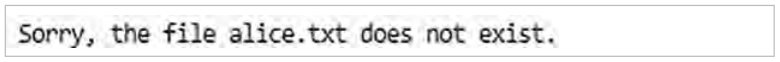

پس از تعیین مسیر، میتوانید با استفاده از متد write_text() در یک فایل متنی بنویسید. برای دیدن نحوۀ کار این تابع، یک پیام ساده نوشته و آن را به جای چاپ روی صفحه، در فایل متنی ذخیره کنید (شکل ۲۷):
پس از نوشتن برنامه و اجرای آن، خروجی در ترمینال مشاهده نمیکنید. حالا فایل mobile_brands.txt را باز کنید. مشاهده میکنید متن شما در فایل نوشته و محتویات قبلی آن پاک شده است.
اگر فایل از قبل وجود داشته باشد، write_text() محتوای فعلی فایل را پاک کرده و محتوای جدید را در فایل مینویسد.
متد write_text() چند کار را در پشت صحنه انجام میدهد. اگر فایلی که مسیر به آن اشاره میکند وجود نداشته باشد، آن فایل را ایجاد میکند.
همچنین، پس از نوشتن رشته در فایل، مطمئن میشود که فایل به درستی بسته شده است. فایلهایی که به درستی بسته نشدهاند میتوانند منجر به از دست رفتن یا خراب شدن دادهها شوند.
شکل ۲۸
صفحه ۲۶۱
اضافه کردن برند جدید
برای نوشتن بیش از یک خط در یک فایل، باید رشتهای بسازید که شامل کل محتوای فایل باشد و سپس write_text() را با آن رشته فراخوانی کنید.

شکل ۲۹
مدیریت استثناها (Exceptions)
شکل ۳۰
در هنگام اجرای برنامه، ممکن است خطاهایی رخ دهند که باعث توقف برنامه شوند. پایتون برای برخورد با این خطاها از سازوکاری به نام استثنا (Exception) استفاده میکند.
هر وقت پایتون در اجرای برنامه با مشکلی روبهرو شود و نداند چه باید بکند، یک «شیء استثنا» ایجاد میکند. اگر برنامهنویس کدی برای مدیریت آن استثنا نوشته باشد، برنامه بدون توقف به کار خود ادامه میدهد. اما اگر استثنا مدیریت نشده باشد، اجرای برنامه متوقف و پیغامی شامل نوع خطا و محل آن نمایش داده میشود که به آن ردیابی (Traceback) میگویند.
صفحه ۲۶۲
مدیریت خطای اشتباه درنوع داده: گاهی برنامهنویس اشتباهاً دادهای از نوع نادرست وارد میکند. مثلاً وقتی میخواهد رشتهای (متن) را به عدد تبدیل کند اما مقدارش
شکل ۳۱
فقط متن باشد، خطای ValueError پیش میآید:
شکل ۳۲
مدیریت خطای تقسیم بر صفر: یکی از خطاهای رایج در برنامهنویسی، تقسیم عدد بر صفر است. این کار از نظر ریاضی ممکن نیست و پایتون سعی میکند برنامه را ادامه دهد ولی این کار ممکن نیست، پس برنامه متوقف و پایتون چیزی به اسم ردیابی برگشتی یا همان Traceback نشان میدهد.
یعنی وقتی پایتون با چنین دستوری روبهرو میشود، استثنایی به نام ZeroDivisionError ایجاد میکند. یعنی: خطا دقیقاً در کدام خط پیش آمده است. چه نوع خطایی بوده است (مثلاً ZeroDivisionError یا ValueError). و تابع یا بخشی از کد که باعث خطا شده است را نشان میدهد.
شکل ۳۳
از این اطلاعات میتوانید برای اصلاح برنامه استفاده کنید. به پایتون بگویید که هنگام وقوع این نوع استثنا چه کاری انجام دهد. به این ترتیب، اگر دوباره اتفاق بیفتد، آماده خواهید بود.
مدیریت خطا با بلوکهای try-except: برای مدیریت استثناها در پایتون از بلوکهای try و except استفاده میشود.
بخش try شامل دستوری است که ممکن است خطا ایجاد کند.
بخش except مشخص میکند اگر خطایی رخ داد، برنامه چه واکنشی نشان دهد.
با استفاده از این روش، میتوانید برنامههایی بنویسید که به جای نمایش پیامهای پیچیده و گیجکننده، پیامهای قابل فهم به کاربر نشان دهد.
صفحه ۲۶۳
مدیریت خطای اشتباه درنوع داده: در اینجا پایتون نمیتواند کلمه "Hello" را به عدد تبدیل کند، پس استثنا تولید میشود، اما برنامه با استفاده از بلوک try-except کنترل خطا را در دست میگیرد.
شکل ۳۴
در اینجا پایتون نمیتواند عدد 5 را بر عدد 0 تقسیم کند، پس استثنا تولید میشود، اما برنامه با استفاده از بلوک try-except کنترل خطا را در دست میگیرد.

شکل ۳۵
استفاده از استثنائات برای جلوگیری از خطا: مدیریت صحیح استثناها (خطاها) زمانی اهمیت حیاتی پیدا میکند که برنامه پس از وقوع خطا، همچنان کارهای دیگری برای انجام دادن داشته باشد. این موقعیت بهویژه در برنامههایی که به طور مداوم از کاربر ورودی دریافت میکنند، رایج است. اگر برنامه بتواند به ورودی نامعتبر به شیوهای مناسب پاسخ دهد، بهجای متوقف شدن و از کار افتادن، میتواند بهطور هوشمندانه ورودیهای معتبرتری را از کاربر درخواست کند و به اجرای خود ادامه دهد.
برای یادگیری این موضوع توضیحاتی که در ادامه آمده است را با دقت بخوانید و انجام دهید.
این برنامه از کاربر میخواهد که عدد اول را وارد کند و اگر کاربر برای خروج q را وارد نکند، عدد دوم را وارد میکند.

شکل ۳۶
صفحه ۲۶۴
سپس این دو عدد را بر هم تقسیم میکند تا به جواب برسد.
این برنامه هیچ کاری برای مدیریت خطاها انجام نمیدهد، اگر کاربر عدد دوم را صفر واردکند، درخواست تقسیم بر صفر باعث از کار افتادن آن میشود:
شکل ۳۷
کاربرد The else Block: وقتی در پایتون از دستورات try و except استفاده کنید، در واقع به مفسر (رایانه) میگویید: "یک کار را امتحان کن، و اگر خراب شد، این کار جایگزین را انجام بده." حالا، بلوک else دقیقاً به چه دردی میخورد؟ else یعنی: "فقط و فقط در صورتی این کار را انجام بده که بلوک try کاملا، ً بدون هیچ خطایی، موفقیتآمیز بود."

شکل ۳۸
صفحه ۲۶۵
اگر خطایی در بلوک try (مثلاً تقسیم عدد بر صفر) رخ دهد، پایتون مستقیم به بلوک except میرود و بلوک else کاملاً نادیده گرفته میشود. این قابلیت کمک میکند، کدی را که فقط پس از موفقیت کامل اجرا شود (مثلاً نمایش نتیجه نهایی یا ذخیره در فایل)، از کدی که فقط برای تست خطا نوشته شده جدا کنید. این کار برنامه را هم تمیزتر و هم منطقیتر میکند.
شکل ۳۹شکل ۴۰
مدیریت خطای File Not Found Error: این خطا یکی از رایجترین استثناهایی است که برنامهنویسان هنگام کار با فایلها با آن روبهرو میشوند. دلایل متعددی برای این خطا وجود دارد: مسیر اشتباه، نام فایل غلط، یا حذف شدن فایل.
بلوک try-except اجازه میدهد که کد را اجرا کنید و در صورت بروز این مشکل خاص، به جای متوقف شدن برنامه، یک واکنش مناسب نشان دهید.

شکل ۴۱
در مثال برنامه تلاش میکند فایلی را که اصلاً وجود ندارد بخواند.
صفحه ۲۶۶
شکل ۴۲
توجه داشته باشید که از متد read_text() کمی متفاوت از آنچه قبلاً دیدید استفاده شده است. آرگومان encoding زمانی ضروری است که کدگذاری پیشفرض سیستم شما با کدگذاری فایلی که در حال خواندن آن هستید مطابقت نداشته باشد. این وضعیت به احتمال زیاد هنگام خواندن فایلی رخ میدهد که روی سیستم شما ایجاد نشده باشد.
پایتون نمیتواند از یک فایلی که وجود ندارد بخواند، بنابراین یک استثنا (Exception) ایجاد میکند (به عبارتی، خطا صادر میکند).
بنابراین برای مدیریت خطایی که ایجاد میشود، بلوک try با خطی که در traceback به عنوان مشکلساز شناسایی شده است، آغاز میشود.
شکل ۴۳
در مثال کد خط ۴ که شامل read_text() است باعث بروز خطا شده است.
در این مثال، کد موجود در بلوک try خطای FileNotFoundError تولید میکند، بنابراین یک بلوک except که با خطا مطابقت دارد، باید نوشته شود. سپس پایتون کد موجود در آن بلوک را زمانی که فایل پیدا نمیشود اجرا میکند و نتیجه به جای یک traceback، یک پیام خطای کاربرپسند است:

شکل ۴۴
Page 260
پیمایش خطوط فایل با حلقه for
Figure 27
نوشتن در فایل: نوشتن یک خط
پس از تعیین مسیر، میتوانید با استفاده از متد write_text() در یک فایل متنی بنویسید. برای دیدن نحوۀ کار این تابع، یک پیام ساده نوشته و آن را به جای چاپ روی صفحه، در فایل متنی ذخیره کنید (شکل ۲۷):
پس از نوشتن برنامه و اجرای آن، خروجی در ترمینال مشاهده نمیکنید. حالا فایل mobile_brands.txt را باز کنید. مشاهده میکنید متن شما در فایل نوشته و محتویات قبلی آن پاک شده است.
اگر فایل از قبل وجود داشته باشد، write_text() محتوای فعلی فایل را پاک کرده و محتوای جدید را در فایل مینویسد.
متد write_text() چند کار را در پشت صحنه انجام میدهد. اگر فایلی که مسیر به آن اشاره میکند وجود نداشته باشد، آن فایل را ایجاد میکند.
همچنین، پس از نوشتن رشته در فایل، مطمئن میشود که فایل به درستی بسته شده است. فایلهایی که به درستی بسته نشدهاند میتوانند منجر به از دست رفتن یا خراب شدن دادهها شوند.
Figure 28
Page 261
اضافه کردن برند جدید
برای نوشتن بیش از یک خط در یک فایل، باید رشتهای بسازید که شامل کل محتوای فایل باشد و سپس write_text() را با آن رشته فراخوانی کنید.
Figure 29
مدیریت استثناها (Exceptions)
Figure 30
در هنگام اجرای برنامه، ممکن است خطاهایی رخ دهند که باعث توقف برنامه شوند. پایتون برای برخورد با این خطاها از سازوکاری به نام استثنا (Exception) استفاده میکند.
هر وقت پایتون در اجرای برنامه با مشکلی روبهرو شود و نداند چه باید بکند، یک «شیء استثنا» ایجاد میکند. اگر برنامهنویس کدی برای مدیریت آن استثنا نوشته باشد، برنامه بدون توقف به کار خود ادامه میدهد. اما اگر استثنا مدیریت نشده باشد، اجرای برنامه متوقف و پیغامی شامل نوع خطا و محل آن نمایش داده میشود که به آن ردیابی (Traceback) میگویند.
Page 262
مدیریت خطای اشتباه درنوع داده: گاهی برنامهنویس اشتباهاً دادهای از نوع نادرست وارد میکند. مثلاً وقتی میخواهد رشتهای (متن) را به عدد تبدیل کند اما مقدارش
Figure 31
فقط متن باشد، خطای ValueError پیش میآید:
Figure 32
مدیریت خطای تقسیم بر صفر: یکی از خطاهای رایج در برنامهنویسی، تقسیم عدد بر صفر است. این کار از نظر ریاضی ممکن نیست و پایتون سعی میکند برنامه را ادامه دهد ولی این کار ممکن نیست، پس برنامه متوقف و پایتون چیزی به اسم ردیابی برگشتی یا همان Traceback نشان میدهد.
یعنی وقتی پایتون با چنین دستوری روبهرو میشود، استثنایی به نام ZeroDivisionError ایجاد میکند. یعنی: خطا دقیقاً در کدام خط پیش آمده است. چه نوع خطایی بوده است (مثلاً ZeroDivisionError یا ValueError). و تابع یا بخشی از کد که باعث خطا شده است را نشان میدهد.
Figure 33
از این اطلاعات میتوانید برای اصلاح برنامه استفاده کنید. به پایتون بگویید که هنگام وقوع این نوع استثنا چه کاری انجام دهد. به این ترتیب، اگر دوباره اتفاق بیفتد، آماده خواهید بود.
مدیریت خطا با بلوکهای try-except: برای مدیریت استثناها در پایتون از بلوکهای try و except استفاده میشود.
بخش try شامل دستوری است که ممکن است خطا ایجاد کند.
بخش except مشخص میکند اگر خطایی رخ داد، برنامه چه واکنشی نشان دهد.
با استفاده از این روش، میتوانید برنامههایی بنویسید که به جای نمایش پیامهای پیچیده و گیجکننده، پیامهای قابل فهم به کاربر نشان دهد.
Page 263
مدیریت خطای اشتباه درنوع داده: در اینجا پایتون نمیتواند کلمه "Hello" را به عدد تبدیل کند، پس استثنا تولید میشود، اما برنامه با استفاده از بلوک try-except کنترل خطا را در دست میگیرد.
Figure 34
در اینجا پایتون نمیتواند عدد 5 را بر عدد 0 تقسیم کند، پس استثنا تولید میشود، اما برنامه با استفاده از بلوک try-except کنترل خطا را در دست میگیرد.
Figure 35
استفاده از استثنائات برای جلوگیری از خطا: مدیریت صحیح استثناها (خطاها) زمانی اهمیت حیاتی پیدا میکند که برنامه پس از وقوع خطا، همچنان کارهای دیگری برای انجام دادن داشته باشد. این موقعیت بهویژه در برنامههایی که به طور مداوم از کاربر ورودی دریافت میکنند، رایج است. اگر برنامه بتواند به ورودی نامعتبر به شیوهای مناسب پاسخ دهد، بهجای متوقف شدن و از کار افتادن، میتواند بهطور هوشمندانه ورودیهای معتبرتری را از کاربر درخواست کند و به اجرای خود ادامه دهد.
برای یادگیری این موضوع توضیحاتی که در ادامه آمده است را با دقت بخوانید و انجام دهید.
این برنامه از کاربر میخواهد که عدد اول را وارد کند و اگر کاربر برای خروج q را وارد نکند، عدد دوم را وارد میکند.
Figure 36
Page 264
سپس این دو عدد را بر هم تقسیم میکند تا به جواب برسد.
این برنامه هیچ کاری برای مدیریت خطاها انجام نمیدهد، اگر کاربر عدد دوم را صفر واردکند، درخواست تقسیم بر صفر باعث از کار افتادن آن میشود:
Figure 37
کاربرد The else Block: وقتی در پایتون از دستورات try و except استفاده کنید، در واقع به مفسر (رایانه) میگویید: "یک کار را امتحان کن، و اگر خراب شد، این کار جایگزین را انجام بده." حالا، بلوک else دقیقاً به چه دردی میخورد؟ else یعنی: "فقط و فقط در صورتی این کار را انجام بده که بلوک try کاملا، ً بدون هیچ خطایی، موفقیتآمیز بود."
Figure 38
Page 265
اگر خطایی در بلوک try (مثلاً تقسیم عدد بر صفر) رخ دهد، پایتون مستقیم به بلوک except میرود و بلوک else کاملاً نادیده گرفته میشود. این قابلیت کمک میکند، کدی را که فقط پس از موفقیت کامل اجرا شود (مثلاً نمایش نتیجه نهایی یا ذخیره در فایل)، از کدی که فقط برای تست خطا نوشته شده جدا کنید. این کار برنامه را هم تمیزتر و هم منطقیتر میکند.
Figure 39Figure 40
مدیریت خطای File Not Found Error: این خطا یکی از رایجترین استثناهایی است که برنامهنویسان هنگام کار با فایلها با آن روبهرو میشوند. دلایل متعددی برای این خطا وجود دارد: مسیر اشتباه، نام فایل غلط، یا حذف شدن فایل.
بلوک try-except اجازه میدهد که کد را اجرا کنید و در صورت بروز این مشکل خاص، به جای متوقف شدن برنامه، یک واکنش مناسب نشان دهید.
Figure 41
در مثال برنامه تلاش میکند فایلی را که اصلاً وجود ندارد بخواند.
Page 266
Figure 42
توجه داشته باشید که از متد read_text() کمی متفاوت از آنچه قبلاً دیدید استفاده شده است. آرگومان encoding زمانی ضروری است که کدگذاری پیشفرض سیستم شما با کدگذاری فایلی که در حال خواندن آن هستید مطابقت نداشته باشد. این وضعیت به احتمال زیاد هنگام خواندن فایلی رخ میدهد که روی سیستم شما ایجاد نشده باشد.
پایتون نمیتواند از یک فایلی که وجود ندارد بخواند، بنابراین یک استثنا (Exception) ایجاد میکند (به عبارتی، خطا صادر میکند).
بنابراین برای مدیریت خطایی که ایجاد میشود، بلوک try با خطی که در traceback به عنوان مشکلساز شناسایی شده است، آغاز میشود.
Figure 43
در مثال کد خط ۴ که شامل read_text() است باعث بروز خطا شده است.
در این مثال، کد موجود در بلوک try خطای FileNotFoundError تولید میکند، بنابراین یک بلوک except که با خطا مطابقت دارد، باید نوشته شود. سپس پایتون کد موجود در آن بلوک را زمانی که فایل پیدا نمیشود اجرا میکند و نتیجه به جای یک traceback، یک پیام خطای کاربرپسند است: